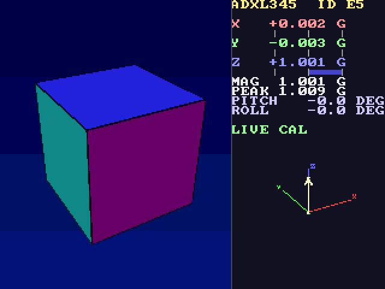
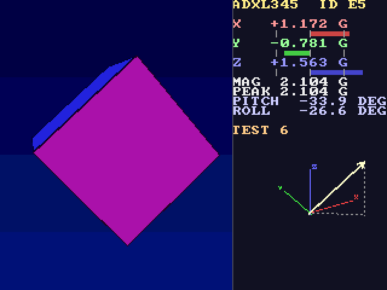

Accelerometer 3D cube
Tilt the board and a shaded cube on the LCD tilts with it. The DE10-Lite's own ADXL345 accelerometer is read over SPI; a sequential math engine turns the direction of gravity into pitch, roll and a rotation matrix once per frame, inside the vertical blanking; a four-stage pipeline then colours every pixel as the screen scans, with no frame buffer. Next to the cube: the live acceleration as numbers and bars, the peak, and a 3D arrow. Every picture the design makes was first made by a bit-exact Python model; the simulation and the board captures match it pixel for pixel.
No bitstream in the repo (a .sof is 3 MB per project): restore the .qar or use the sources here,
one build makes it in a few minutes. The user guide has every command.
Resources
The last build: MAX 10 10M50DAF484C7G, Quartus Prime 17.1.0 Lite, 00:02:34 to build. Made by python scripts/de10.py report projects/accel_cube --html.
| Resource | Used | Of the device | What uses it |
|---|---|---|---|
| Logic elements (area) | 12,513 | 49,760 (25 %) | core/math (cube_math) 8,245; core/draw (cube_draw) 3,626; debug (debug_link) 446; core/printer (line_printer) 369; accel (adxl345) 236 |
| Registers | 5,857 | - | core/math (cube_math) 4,654; core/printer (line_printer) 215; accel (adxl345) 167 |
| Memory bits | 942,080 | 1,677,312 (56 %) | debug (debug_link) 921,600; screens (Screens_dispaly) 16,384; uart (jtag_uart) 4,096 |
| M9K memory blocks (9 kbit each) | 117 | 182 (64 %) | debug (debug_link) 114; screens (Screens_dispaly) 2; uart (jtag_uart) 1 |
| Multipliers (9-bit elements) | 82 | 288 (28 %) | core/draw (cube_draw) 80; core/math (cube_math) 2 |
| PLLs | 1 | 4 (25 %) | pll clk[0] 25.0 MHz; pll clk[1] 50.0 MHz; pll clk[2] 100.0 MHz |
| Pins | 107 | 360 (30 %) | |
| ADC blocks | 0 | 2 (0 %) | |
| JTAG hub (USB link) | 1 | 1 (100 %) |
| Clock | Runs at | Fmax (slow model, 85 °C) | Setup slack |
|---|---|---|---|
| altera_reserved_tck | 10.0 MHz | 145.35 MHz | 46.560 ns |
| clk50 | 50.0 MHz | - | - |
| pll clk[0] | 25.0 MHz | 47.83 MHz | 12.024 ns |
| pll clk[1] | 50.0 MHz | 173.43 MHz | 14.234 ns |
| pll clk[2] | 100.0 MHz | 410.51 MHz | 5.242 ns |
Timing: met, worst slack +0.147 ns (all corners, setup, hold, recovery, removal).
Three clocks come out of one PLL. The 25 MHz pixel clock runs everything the cube does: the filter and the controls
(cube_core), the per-frame math engine (cube_math), the pixel pipeline (cube_draw,
cube_text), the USB link and the report line. The 50 MHz clock runs only the SPI reader of the ADXL345
(adxl345): a sample crosses to 25 MHz through a held value and a toggle. The 100 MHz clock belongs to the
library's LCD writer inside Screens_dispaly. The biggest user is the math engine, 8,245 logic elements and
4,654 registers: it is one step-by-step machine that keeps the whole frame's results (12 edge functions of 48 bits, 8 line
segments with their boxes, 7 BCD numbers) in registers and shares one 18×18 multiplier, one divider, one square root,
one CORDIC and one BCD converter between all its steps. The pixel pipeline is next, 3,626 logic elements and 80 of the 82
multiplier elements: it evaluates 20 line equations for every pixel, each a pair of 16×18-bit products. Nearly all the
memory, 921,600 bits in 114 M9K blocks, is the screen capture buffer of debug_link (every 2nd pixel and line,
320 × 240 × 12 bits): it exists only so a PC can
read the picture back over USB for the tests; the design itself needs 3 blocks (the LCD command list and the JTAG UART).
Contents
- Resources
- What you will see
- Block diagram
- How it flows
- Numbers
- How it was tested
- Review log
- Status and what is next
- Files
What you will see

de10.py screen).
Plug the board in with the LCD shield on and load the design. The left 384 pixels hold the cube on a sky gradient, seen
from 30° above. Lay the board flat: the cube sits level, its blue +Z face on top. Lift the far edge: the cube pitches
towards you; lift a side: it rolls. The cube follows the filtered reading (one eighth of the way to each new sample),
so it moves smoothly and ignores a tap. The right panel shows the raw reading: X, Y and Z in g with a bar each
(1 g = 56 pixels), the magnitude, the highest magnitude since the last restart (PEAK), and pitch and roll in degrees.
Below the numbers a 3D arrow shows the same raw vector in a small axis cross, 1 g = 64 pixels, with its dashed projection
to the floor; shake the board and the arrow and bars jump while the cube stays calm. The last row says
LIVE, LIVE CAL after you calibrate (KEY1 with the board flat), or TEST n for one of the eight
test presets you can call up over USB. The 7-segment digits show the mode letter and |a| in g; the LEDs are a bubble
level along x. Letters typed over the USB cable (de10.py send) do everything the keys do, and r prints
one report line with every number.
Block diagram
Two clock crossings, both one way. The ADXL345 reader lives on the 50 MHz clock; when it has a new sample it holds
x, y, z in registers and flips one bit. Three flip-flops bring that bit to 25 MHz, and a change of the bit is the one-clock
acc_valid pulse; by then the held values have been stable for at least two 50 MHz clocks, so they are read
plainly. The keys are two-flop synchronised, as usual. The LCD writer runs at 100 MHz inside the library's
Screens_dispaly, which takes care of its own crossing. The blocks are split by when they work:
cube_core at every sample (100 Hz), cube_math once per frame (60 Hz) in the 28,000 idle clocks between
the start of vertical sync and the first visible pixel, cube_draw at every pixel (25 MHz). Only the per-pixel part has to be parallel; everything
else is one sequential machine sharing one multiplier, which is what keeps the design at a quarter of the chip.
How it flows
- A sample arrives. Every 10 ms the ADXL345 has new x, y, z (1 g = 256 counts).
adxl345reads them over 4-wire SPI at 50 MHz and flips its toggle;cube_coreseesacc_validat 25 MHz. The filter moves one eighth of the way to the new sample (fx += (x − fx) / 8in 1/256 counts) and rounds to Q4 counts (1 g = 4096): that isg. The raw sample shifted left by 4 isa. Both lose the calibration offsets (zero until KEY1 /c), and theHEADINGparameter turns x, y into the screen's frame. - The frame tick. At the falling edge of VGA_VS the screen has finished its last visible line and the 10-line
front porch; the sync and the back porch, 35 blank lines (28,000 clocks), follow before the first visible pixel.
cube_mathlatchesg,a, the view yaw and the peak-restart request, and runs its phases: squares and square roots give |a| and |g|; if |g| ≥ 0.25 g the CORDIC (vectoring) gives pitch and roll, otherwise the last orientation is held; the CORDIC (rotation) gives cos and sin of the view yaw; the rotation matrix is multiplied out; the 8 corners are projected with the divider (perspective, camera 600 px away); the faces whose normal points at the camera get a shade from the light and 4 edge functionsE(x, y) = ((x·dy − y·dx) << 4) + c; x, y, z, |a|, the peak, pitch and roll become BCD; the arrow, its head, its floor shadow and the three axes become 8 line segments with bounding boxes. 876 to 948 clocks laterdonerises, with 35,000 clocks to spare. - Every pixel. As the visible lines scan,
cube_drawworks 4 pixels ahead of the one the screen asks for: stage 0 picks the coordinates (and knows the counter's quirks in the blanking), stage 1 multiplies them into the 12 edge functions and 8 segment functions, stage 2 decides inside / on-the-edge / outside, stage 3 picks the colour by priority: a face (darkened on its edges) or the sky gradient left of x = 384, the separator, then on the right the widget (segments, then the X Y Z labels) below y = 224 or the text panel above it (a glyph fromcube_textand the 8×8 font at 2×, the bars, the ticks). The registered colour leaves asrgb;Screens_dispalywrites it to the LCD at 100 MHz. - Letters and lines. A letter typed on the PC comes through
jtag_uartanddebug_link:?andFare answered there (status, screen capture); the others reachcube_core: a digit freezes the engine's inputs on a test preset,lgoes back to the sensor,c/utake or forget the offsets,sstarts the view turning 0.5° a frame,krestarts the peak,rasks for the report. Between two framesline_printersends the 114 characters of the report throughtx_muxand the same USB cable. KEY0 restarts the peak, KEY1 calibrates.galong x lights one of the ten LEDs (a bubble level); |a| and the mode letter are on the 7-segment digits.
Numbers
The figures that are not resources (those are at the top).
| Frame rate | 25 MHz / (800 × 525) = 59.5 frames a second; the engine finishes 876..948 clocks (35..38 µs) after the tick, with 28,000 clocks (35 blank lines) before the first visible pixel (measured in sim/tb_cube_math.sv) |
| Sample rate | 100 Hz from the ADXL345. The 1/8 filter is within 1 % of a new steady value after 35 samples (0.35 s); the raw path shows every sample as it comes |
| Pixel pipeline | 1 pixel per clock, 4 clocks deep, looking 4 pixels ahead so the colour is ready in the clock the screen asks for it |
| Picture | 640 × 480, 12-bit colour; 16 columns × 14 rows of 16 px text; the arrow 1 g = 64 px, the bars 1 g = 56 px |
| Build | 2 min 34 s. 37 warnings, none from this project's own files: pin stuck at GND / VCC (the unused decimal points, HEX4, four unused ARDUINO_IO pins), unused GSENSOR_INT, the tri-state SDI note (13010) from the library's adxl345 |
| Simulation | tb_cube_math: 18 frames, 569 numbers, about 1 s in Icarus. tb_accel_cube: 13 frames, each captured as the board's capture does (every 2nd pixel and line, 320 × 240 = 76,800 pixels), about 20 minutes in Icarus (1.5 min a frame) |
How it was tested
Without the board
The reference is assets/model.py: the whole design in Python with the same integers, bit for bit. Its
selftest checks the integer math against floating point (angles within 0.1°, the CORDIC gain, the perspective),
the filter from both sides, the saturation, the two-vector split and the report length. Two testbenches then hold the RTL
to the model. sim/tb_cube_math.sv runs the engine alone for 18 frames: the 8 presets in sequence, then 8 more
vectors with other view yaws (both sides of the CORDIC's ±90° pre-rotation, ±180°, a peak kept from an
earlier frame) and two live cases; it prints every output of every frame (569 lines) and compares them with
sim/math_expected.txt, written by model.py dump; PASS, about one second. sim/tb_accel_cube.sv
runs the whole cube_core with the library's VGA counter and captures 13 frames to sim/frame_*.ppm,
each the way the board's capture does it (every 2nd pixel and line, 320 × 240 = 76,800 pixels):
the 8 presets, then the live path (120 samples through the filter), a KEY1 calibration, the frame after one more sample,
the r report (114 characters + CR LF, compared character by character), u, a frame while spinning,
and the spin stopping; each frame's hash must equal the model's. PASS: 13 frames bit-exact with the model, calibration,
report and spin checked
, about 20 minutes in Icarus. A line-by-line dump beats a frame hash: review item 8 below was a
disagreement that drew the same (empty) pixels and only the dump saw it.
On the board
The board was programmed and each preset called up over USB, the screen read back and compared with the model:
de10.py send "3" 1, de10.py screen logs/board_3.png, model.py compare seq:3 logs/board_3.txt.
All eight presets: 0 of 76,800 pixels differ, in both the first version and the rework. Then the live path with
the board flat on the table: r gave Z+1.000 MAG 1.000 ... ID E5 LIVE; c gave
Z+0.998 MAG 0.998 PITCH +0.1 ROLL -0.0 ... LIVE CAL and u went back; s made two captures a
second apart differ with the cube visibly turned, s again stopped it; after k a 60-second watch of
r showed PEAK steady at 1.009..1.012 g, so the raw path has no glitch samples. The ? status line
(T=25B2 BTN=00 KEY=0 SW=3FF WHL=000) came from debug_link as in every project.
Only a person can check
Which way the cube leans when you lift a given edge (the HEADING parameter, 0 by default, chooses where the
board's +x points on the screen), that nose-down reads as a negative pitch, which way the LED bubble slides, and the feel
of KEY1 (the USB c path is verified on the board; the key itself only in simulation). One PEAK reading of 2.359 g
appeared once between two command batches with the board on the desk; it never recurred in the 60-second watch and was
most likely a knock on the desk. The webcam capture (de10.py cam) failed on the build PC, so there is no board
photo yet.
Review log
Every source was read once, whole, before the pages were written; what it found and what the tests found, with the fix.
| Found | Cause | Fix |
|---|---|---|
Quartus: constant value overflowon the saturation limit in cube_core | -16'sd32768 does not fit a signed 16-bit literal | written as 16'sh8000 (gotcha: size every constant) |
Quartus: index expression is not wide enoughin cube_math | a 3-bit index into an array of 16 (pm[{2'b00, fax}]) | a 4-bit index wire per lookup |
| The filtered Q4 reading differed from the model's by one count in some cases | the filter's truncating shift sticks up to 7 counts below its target when approached from below | the Q4 output is rounded, (fx + 8) >> 4; settles exactly from both sides (checked with 90 samples in Python); in read-accelerometer |
A letter and KEY1 in the same clock could set and clear test mode; peak_clr set and cleared in one path | two writers to one register in one block | if / else-if priority: a digit wins over live; peak_clr is set by a request and cleared only when the engine takes it |
| SW went into the core straight from the pins while KEY had two flops | an oversight; one bit muxed the engine's inputs at pixel rate | a two-flop synchroniser for SW in the top (SW now only in the ? line) |
| Test gap: every preset used the same view yaw and restarted the peak | the CORDIC's ±90° branch, ±180° and the keep the old peakbranch were never exercised | 8 extra yaw cases in the model and tb_cube_math (503, now 569 lines compared) |
| Test gap: the frame hashes covered the 8 presets only | the live path (filter, raw, report) was untested | tb_accel_cube extended with 120 live samples, the calibration, the report and the spin |
| Rework: the model clamped a segment's bounding box on one side only; a 3.8 g arrow wholly above the widget disagreed with the RTL | the RTL clamps both sides to 10 bits; both drew nothing, so no pixel differed | model.py clamps both sides as the RTL does; caught by the math dump, not by a frame hash (gotcha) |
| The math testbench failed all 569 lines after the expected file was regenerated | PowerShell's > writes UTF-16 with a byte-order mark; $fgets read it as garbage | the expected file is written by Python (ASCII, LF); gotcha |
| Rework (asked for after the first version): the cube wobbled with every shake and the view spun all the time; no way to zero a tilted desk; a YAW row that an accelerometer cannot measure | one vector served both the cube and the numbers; the spin was on by default; no calibration; a row filled for symmetry | two vectors (filtered for the cube, raw for arrow / bars / numbers), spin off by default (s toggles), KEY1 / c calibration with u to forget, the YAW row dropped; model, RTL, both testbenches and the board checks redone |
Status and what is next
| Item | Status |
|---|---|
| The eight test presets, pixel for pixel | verified: simulation and board (0 of 76,800 pixels differ) |
| The live path: filter, raw vector, numbers, bars, arrow | verified: simulation and board |
Calibration (c / u) and the report line (r) | verified: simulation and board |
| Calibration from KEY1 | verified: simulation press it on the board |
The spin (s) | verified: simulation and board |
The peak and its restart (k / KEY0) | verified: simulation and board (60 s watch) |
In the flash: starts by itself at power-up (de10.py flash) | verified: board (written and verified, 0 errors; preset 1 from the flashed image 0 of 76,800 pixels differ; the cable unplugged and plugged, the cube came back by itself) |
| The engine's numbers (pitch, roll, shades, corners) for 18 frames | verified: simulation against the model |
Which way the cube leans for a given tilt (HEADING), the pitch sign, the LED bubble direction | to do by a person with the board in hand |
| A photo of the board | to do by a person (the webcam failed) |
| Yaw (which way the board points) | left out on purpose: an accelerometer cannot measure it (turning about gravity leaves it unchanged) and the DE10-Lite has no compass |
| Possible next steps | a faster or adjustable filter; a trail of the arrow; a tap counter; the cube as a die that shows the face on top |
Files
| File | What it is |
|---|---|
index.html, spec.html, guide.html | this overview, the architecture spec, the user guide |
accel_cube.qar | the whole Quartus project (de10.py pack) |
accel_cube.qpf, .qsf, .sdc | the Quartus project, pins and timing constraints (scripts/new_project.py) |
src/accel_cube_top.sv | the pins, the PLL, the sensor reader, the clock crossings, the display chain, the USB link |
src/cube_core.sv | the filter, the two vectors, the calibration offsets, the controls, the LEDs and 7-segment digits; instantiates the engine, the pipeline and the report printer |
src/cube_math.sv | the per-frame engine: 13 phases, the shared units, the outputs for the pipeline |
src/cube_units.sv | the shared divider, square root and CORDIC (16 clocks each) |
src/cube_draw.sv | the 4-stage per-pixel pipeline |
src/cube_text.sv | the text panel's characters and colours; the report line |
assets/model.py | the bit-exact Python model: render, compare, hashes, dump, constants, report, selftest |
sim/tb_cube_math.sv, sim/math_expected.txt | the engine's unit test and the model's expected numbers |
sim/tb_accel_cube.sv | the full-frame testbench (13 frames, calibration, report, spin) |
media/screen_*.png | screens read back from the board |